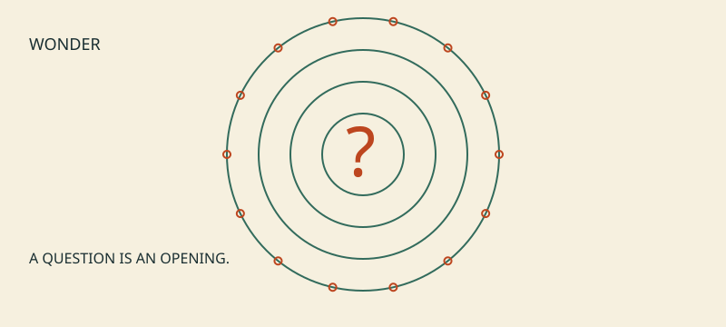

Root Sequence / a living inquiry / v0.1.2
The
Stoned Age
Altered States, Human Curiosity, and the Long History of Making Meaning

What happens after somebody says, “I have figured it all out”?
A playful, intellectually serious inquiry into changed experience, human origins, religion, shared stories and AI. The companion provocation is How Drugs Explain the Universe. The evidence has a more careful story to tell.
01 / The illustrated essay
A doorway into the argument.02 / The small book
16 illustrated pages, plus an accessible HTML edition.03 / The living paper
The argument, sources, hypotheses and limits.04 / The talk
12 slides and a 25-minute speaker outline.
A doorway into the argument.02 / The small book
16 illustrated pages, plus an accessible HTML edition.03 / The living paper
The argument, sources, hypotheses and limits.04 / The talk
12 slides and a 25-minute speaker outline.
Wonder is welcome.
Claims remain accountable.
This is an AI-assisted first edition, not a peer-reviewed release. Root Sequence coordinates inquiry; it does not claim specialist authority. Each edition draws from a shared source register.
Inspect the sources · Download the claims ledger · Method and next research steps · Project record and exact placement